Advanced Settings
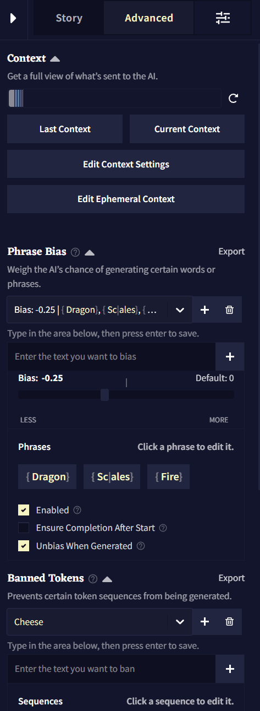고급 세팅Advanced Settings 탭에서는 Story Context 등과 관련된 모든 옵션들이 있습니다! 처음에는 다소 압도감을 느낄 수도 있지만 Phrase Bias과 Banned Tokens 기능과 함께 Context를 이해하고 컨트롤하는 것은 모두 AI를 안내할 수 있는 강력한 방법입니다.
- Context
- Phrase Bias
- Banned Tokens
- Ban Bracket Generation
- Stop Sequences
- Duplicate and Start as Scenario
Context
컨텍스트Context에서는 출력을 생성할 때, 사용자의 스토리가 AI에게 어떻게 보여지는지를 나타냅니다. Advanced 탭의 Context 섹션에서 컨텍스트가 자세하게 어떻게 보이는지와 컨텍스트를 조절하는 세팅을 볼 수 있습니다. Ephemeral Context도 역시 여기에 위치하고 있습니다. Ephemeral Context은 지연되거나 시간이 정해진 컨텍스트 항목을 생성하는 고급 방법입니다.
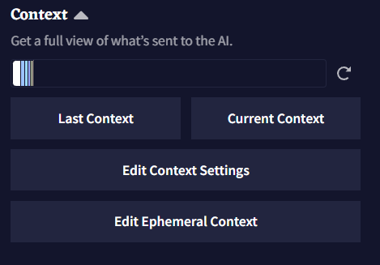해당 탭 상단의 Context Bar는 가장 최근에 사용한 Context 내의 모든 텍스트에 대한 통계를 출처1에 따라 색상으로 보여줍니다. 해당 표시줄에서 각 섹션에 마우스 포인터를 올려두면 토큰 수나 각 항목이 컨텍스트에서 몇퍼센트를 차지하고 있는지와 같은 자세한 정보가 들어있는 박스가 표시됩니다.
| 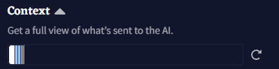 | 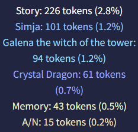 |
Goose tip: Context Bar는 얼마나 많은 정보가 사용되는지 뿐만 아니라 AI의 '두뇌'를 얼마나 사용할 수 있는지도 나타내요. 최대 컨텍스트 크기는 사용자의 구독티어에 따라 다르답니다.
Last Context 혹은 Current Context 버튼을 클릭하면 Context Viewer가 열리고 스토리 컨텍스트에 대한 모든 통계가 표시됩니다. 더 많은 정보를 얻기 위해서는 하단의 Context Viewer 섹션을 확인하십시오.
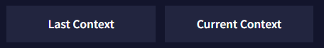
Edit Context Settings은 Context Settings 창을 엽니다. 해당 창에서 Context 크기 내에서 스토리 컨텍스트 섹션의 토큰 예산을 책정하고 위치를 조절하고 다듬을trim 수 있습니다. 전체 분석을 위해서는 Context Settings 섹션을 확인하십시오.
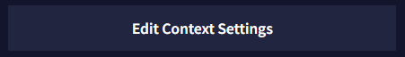
Ephemeral Context는 사용자의 현재 스토리 단계Story Step를 기반으로 하여 지연될 수 있거나 시간이 정해진 컨텍스트 항목을 만드는데 사용될 수 있으며, 이것은 Story Settings Tab의 View Story Stats에서 확인할 수 있습니다. 더 깊은 설명과 예제를 보기 위해서는 아래의 Ephemeral Context 섹션을 확인하십시오.
Context Viewer
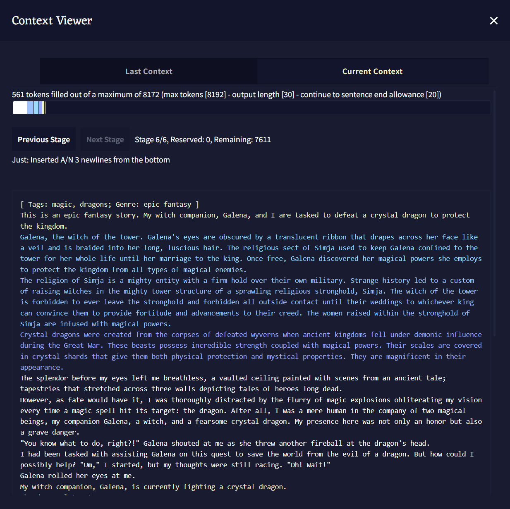
Context Viewer에서 글 생성을 위해 AI에게 전달되는 스토리의 컨텍스트Context가 어떻게 생겼는지 볼 수 있습니다. Lorebook 항목, Memory, Author's Note와 Phrase Biases가 스토리에서 어떻게 다뤄지는지에 대한 상세 정보가 제공됩니다.
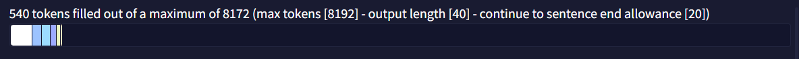
Context Viewer Bar: 상단의 Context 섹션에서 언급한 바와 유사하게, 해당 Context Viewer Bar도 스토리의 Context에 개별적인 색상과 이름이 붙여진 덩어리를 통해 시각적인 표현을 한 것입니다. 해당 표시줄의 각각의 색상에 마우스포인터를 올려두어 더 많은 정보를 볼 수도 있습니다.
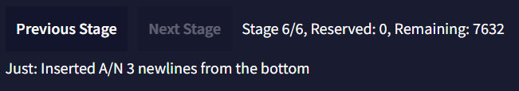
Stages: 활성화된 로어북 항목, 메모리, 작가노트와 스토리의 텍스트 그 자체를 통해 Story Context를 만들 때, 모든 것이 Stages에 조직화되고 삽입됩니다. 스테이지 0에서 시작하여 Context Settings에 설정된 Insertion Order 값에 따라, 스토리의 각기 다른 모든 부분들이 함께 모여 스토리의 Context를 형성합니다. Next와 Previous Stage 버튼을 눌러 각 스테이지와 Insertion Order에 따라 각 항목이 배치되는 위치를 볼 수 있습니다.
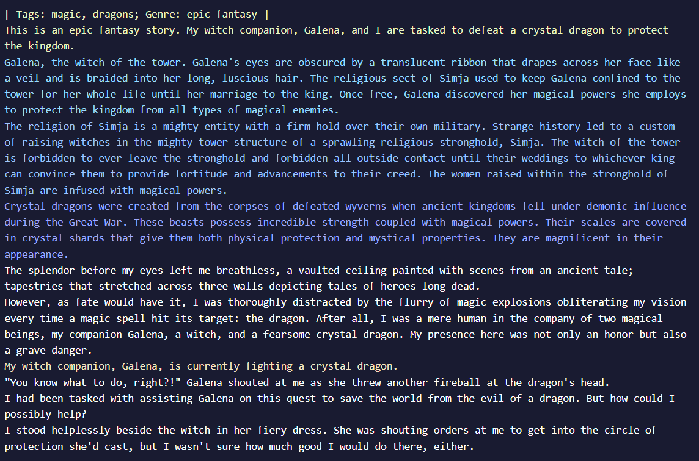
주 Context Viewer 창은 스크롤 가능한 박스 안에 전체 컨텍스트를 보여줍니다. Context Viewer Bar와 유사하게 각 출처1에 따라 다른 색상으로 표시된다.
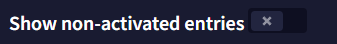
Show non-activated entries 토글을 켜면 하단의 Context Viewer Information 박스를 확장하여 켜져는 있지만 비활성화 상태의 모든 로어북 항목을 보여줍니다.
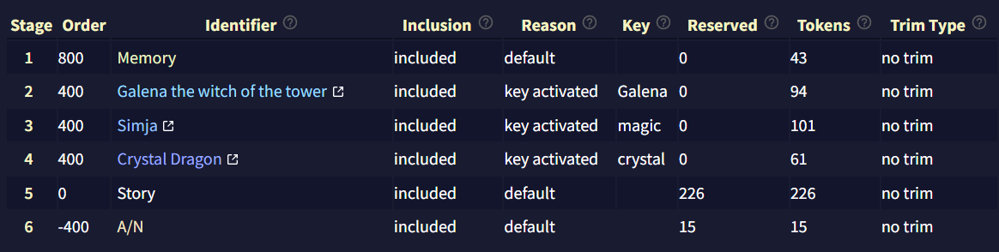
Context Viewer Information 박스는 Story Context에 대한 또 다른 상세한 통계입니다. 해당 섹션은 로어북 항목과 Story Settings 박스에 대한 깊이 있는 정보를 보여줍니다.
- Stage: Context를 빌드할 때 항목이 삽입되는 stage를 보여줍니다.
- Order: Lorebook이나 Context Settings에 따른 항목들의 Insertion Order.
- Identifier: Lorebook이나 Context Settings 탭에서 표시되는 항목 이름.
- Inclusion: 항목이 Context에 포함되는지의 여부.
- Reason: 항목이 Context에 포함되거나 제외된 이유.
- Key: 해당하는 경우, 항목의 활성화 키.
- Reserved: Lorebook이나 Context Settings 설정에 따라 해당 항목에 예약된reserved 토큰의 수.
- Tokens: 항목의 활성 토큰의 수.
- Trim Type: Lorebook이나 Context Settings에서 정의된 설정에 따라, 다른 항목의 공간을 확보하기 위해 해당 항목이 잘리는 방법.
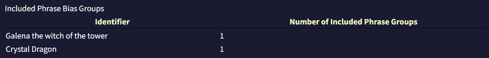
마지막으로, Included Phrase Bias Groups 섹션은
Context Settings
Context Settings 메뉴는 4개의 비슷한 섹션을 담고 있습니다: Memory Context Settings, Author's note Context Settings, Default Lorebook Settings와 Story Context Settings, 그리고 최상단의 Reset to Defaults 버튼. Lorebook 섹션에서 다루는 Default Lorebook Settings 섹션을 제외하면 각 세션은 모두 같은 구성을 하고 있습니다.
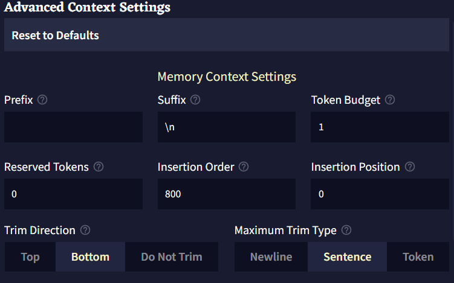
- Prefix는 트리밍trimming 후 컨텍스트에 삽입하기 전에 항목 앞에 덧붙는 텍스트입니다.
- Suffix는 트리밍trimming 후 컨텍스트에 삽입하기 전에 항목 뒤에 덧붙는 텍스트입니다.
- Token Budget은 항목이 사용할 수 있는 컨텍스트의 최대 토큰 양입니다. 0과 1(제외) 사이의 십진법 소수점은 최대 컨텍스트 사이즈(최대 토큰 - 출력의 길이)의 백분율로 해석됩니다.
- Reserved Tokens은 항목이 자체적으로 예약할 수 있는 컨텍스트의 토큰 양입니다. 모든 예약은 항목들이 컨텍스트에 놓이기 전에 이뤄집니다. 항목은 자신이 실제로 가진 양을 넘는 토큰을 예약하지 않습니다. 예를 들어, 예약된 토큰이 200이고 항목의 토큰이 100이라면 100의 토큰만 예약될 것입니다.0과 1(제외) 사이의 십진법 소수점은 최대 컨텍스트 사이즈(최대 토큰 - 출력의 길이)의 백분율로 해석됩니다.
- Insertion Order은 스토리 컨텍스트가 빌드될 때 항목들이 어떤 순서로 삽입/처리될 지를 나타냅니다. 높은 삽입 순서를 가진 항목은 토큰들을 예약하고 컨텍스트에 먼저 삽입될 것입니다. 만약 두개의 항목이 같은 삽입 순서를 같고 있다면 먼저 삽입될 것이라는 보장은 없습니다.
- Insertion Position은 항목이 컨텍스트에 삽입될 위치입니다. 0은 컨텍스트의 최상단을, 1은 한단계 아래, 2는 두단계 아래가 되는 식입니다. 음수는 컨텍스트의 가장 아래부터 계산됩니다. -1은 가장 아래, -2는 한단계 위로, -3은 두단계 위로가 되는 식입니다.
- Trim Direction은 전체 항목이 컨텍스트에 맞지 않을 때do not fit 항목을 자를 위치입니다.
Do Not Trim으로 설정한다면 항목의 전체 텍스트가 컨텍스트 내에 맞을fit 때만 항목이 포함될 것입니다. - Maximum Trim Type은 항목을 트리밍trimming할 수 있는 범위입니다.
- Insertion Type은 항목을 삽입할 때 컨텍스트를 구분하는데 사용될 단위를 결정합니다.
Ephemeral Context
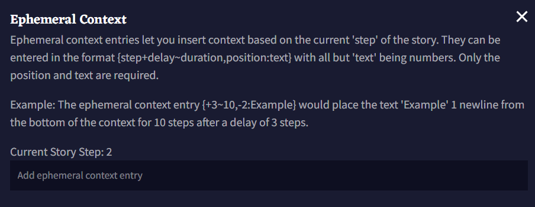
위 이미지에서 볼 수 있듯이, Ephemeral Context 항목은 현재 Story Step(Story Settings Tab의 View Story Stats에서 볼 수 있음)을 기반으로 Context에 텍스트를 삽입할 수 있게 해줍니다. 상단 이미지와 아래의 박스에 나타난 Ephemeral Context 항목의 예제를 봅시다. 항목은 4개의 부분으로 나뉩니다: Delay, Duration, Insertion 그리고 엔트리의 Text.
Ephemeral Context 항목은 중괄호 {}로 감싸져야 합니다.
{+3~10,-2:Example}
-
Delay
Delay는 Ephemeral Context 항목에 들어가는 첫번째 숫자이며, 앞에+나-를 붙여 스토리의 양수 혹은 음수 스텝을 지정할 수 있습니다. 딜레이를+0으로 설정하면 항목이 즉시 활성화되며 숫자 뒤에r을 추가하면 Duration이 충족된 후 항목이 반복됩니다. Delay보다 긴 Duration을 가진 항목은 한번 활성화되면 계속 반복할 것이기 때문에, 해당 항목이 간헐적으로 트리거되게 하려면 Delay를 길게 설정하십시오. 위 예제에서 Delay는+3이므로, 이는 항목이 세 Story Steps 후에 활성화됨을 지정한 것입니다. -
Duration
항목의 Duration은 항상~기호를 앞에 붙이며, 몇개의 Story Steps 동안 항목이 활성화될지를 지정합니다. 예를 들어, Duration이~10이면, 이것은 항목이 활성화되고 나서 10개의 story step 동안 항목이 활성화될 것임을 의미합니다. -
Insertion
Insertion 값은 항상,기호를 앞에 붙이며 Duration 값 뒤에 위치합니다. 항목의 삽입 위치를 지정하기 위해 숫자 앞에+나-기호를 붙일 수 있습니다.0은 컨텍스트 상단,-1은 컨텍스트 하단입니다. 예를 들어, 해당 예제에서 텍스트는 컨텍스트 아래부터 한줄 위에 삽입됨을 의미합니다. -
Insertion 값 다음의 Text는 Ephemeral Context 항목의 텍스트이며, 앞에 반드시
:가 있어야 합니다. 의도한 것이 아니라면 항목의 텍스트 앞에 공백을 두지 마십시오.:와}사이의 모든 텍스트가 그대로 삽입됩니다.
요약하면, 이 섹션의 시작 부분에 나열된 예제는 항목이 생성된 후에 3 story step 후에, 10 story step 동안, 컨텍스트 하단으로부터 한 줄 위에 Example를 삽입할 것입니다.
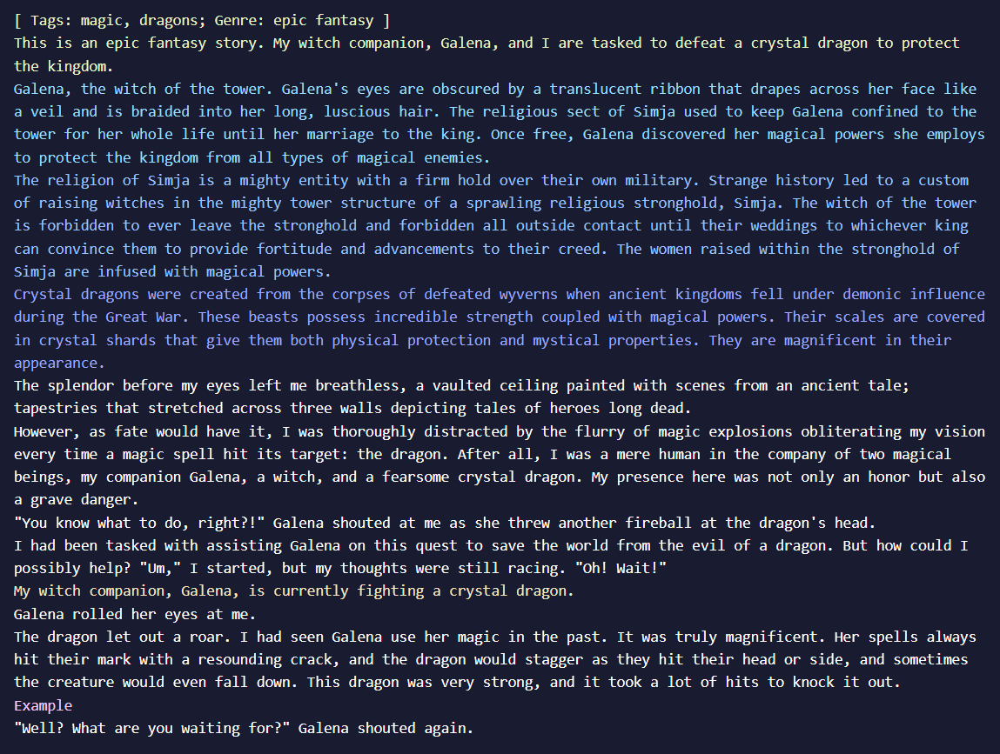
Phrase Bias
Phrase Bias를 사용하면 해당 항목이 활성화되었을 때, AI가 특정한 단어나 구를 생성할 확률을 높이거나 낮출 수 있습니다. 정확한 텍스트를 입력하려면 bias를 중괄호 {}로 둘러싸면 됩니다. 토큰 ID(토크나이저에 지정된)를 넣기 위해서는 대괄호 []로 bias를 둘러싸면 됩니다. 입력된 텍스트는 대소문자를 구분합니다.
Phrase Bias를 만들기 위해서는 텍스트 영역에 입력을 하고 저장하기 위해 엔터를 누르십시오.
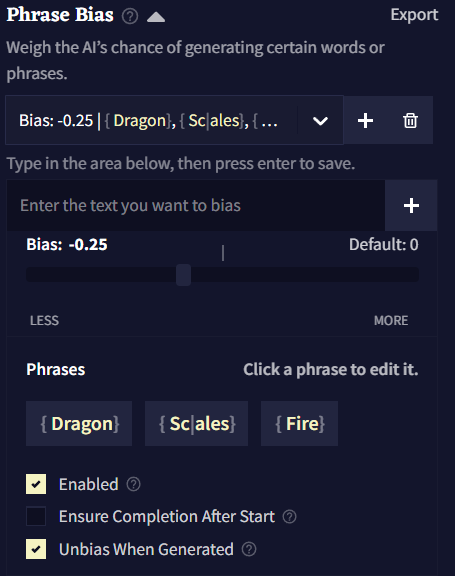
Import와 Export 버튼을 클릭하여 .bias 파일로 Phrase Bias를 가져오거나 내보낼 수 있습니다.
Bias는 그룹으로 구성되는데 각 그룹에는 고유한 bias 값이 있고 해당 값은 그룹 내부의 모든 토큰과 구에 적용됩니다. 하나의 로어북 항목에 여러 그룹의 Phrase Bias을 가질 수도 있습니다.
새 bias 그룹을 만들기 위해서는 Add 버튼을 클릭하십시오.  Delete 버튼을 클릭하여 현재 선택된 그룹을 삭제할 수 있습니다.
Delete 버튼을 클릭하여 현재 선택된 그룹을 삭제할 수 있습니다.
Bias Value은 토큰의 그룹이 편향된 정도를 나타냅니다.
Bias Value의 효과는 사용하고 있는 AI Model에 따라 크게 다릅니다. 예를 들어, Krake는 다른 모델보다 bias에 민감하므로 소수점을 사용하는 것이 좋습니다.
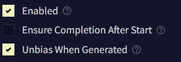
Enable은 bias를 켤지 말지를 토글할 때 사용합니다.
When Entry Inactive 그룹의 활성화 동작을 반전시킵니다. 이것을 켜면, 항목이 활성화 상태가 아니라 비활성화 상태일 때 해당 bias 그룹이 적용될 것입니다.
Ensure Completion After Start가 활성화되면, 구phrase의 첫번째 토큰이 생성될 때 후속 토큰이 항상 생성됩니다.
Unbias When Generated이 활성화되면, 구phrase가 생성된 후 나머지를 생성하는 과정에서 해당 bias가 제거됩니다. 이 옵션은 해당 구가 생성되는 것을 막지는 않고, 그곳에 놓인 bias만을 제거할 뿐입니다.
Banned Tokens
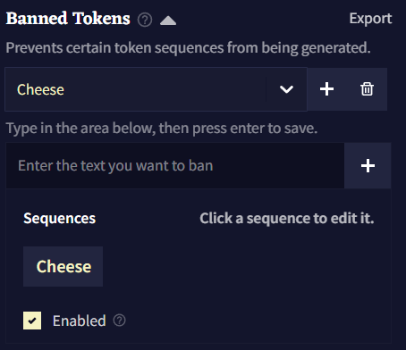
Banned Tokens에서는 AI가 생성하는 토큰이나 시퀀스를 완전히 금지시킬 수 있습니다. 정확한 텍스트를 입력하려면 bias를 중괄호 {}로 둘러싸면 됩니다. 토큰 ID(토크나이저에 지정된)를 넣기 위해서는 대괄호 []로 bias를 둘러싸면 됩니다. 입력된 텍스트는 대소문자를 구분합니다.
Ban Bracket Generation
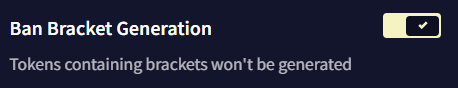
Ban Bracket Generation 토글을 켜면 AI가 [] 대괄호를 생성하지 못하게 할 수 있습니다. 이 기능을 끄면 RPG 등에서 유용할 수 있습니다!
Stop Sequences
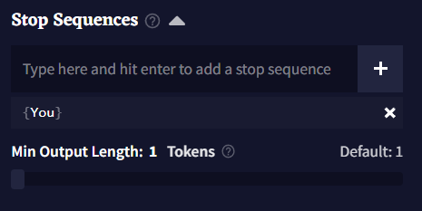
Stop Sequences 박스에 토큰이나 단어를 입력하여 해당 글자가 나왔을 때 글 생성을 멈추게 할 수 있습니다. 하단의 Min Output Length 슬라이더를 조절하여 Stop Sequences가 작동trigger되기 전에 얼마나 길게 글을 출력을 할 지 결정할 수 있습니다.
Duplicate and Start as Scenario
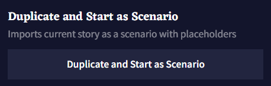
Duplicate and Start as Scenario 버튼을 누르면 로어북Lorebook 및 설정들이 포함된 현재 스토리의 복사본이 생성되고, 임포트한 새 시나리오인 것처럼 시작됩니다. 플레이스홀더를 입력하면 다음 팝업에서 활성화되므로 공유하거나 리플레이할 시나리오를 테스트할 때 유용한 버튼입니다!
역주. 해당 항목이 로어북인지, 메모리인지, 작가노트인지.